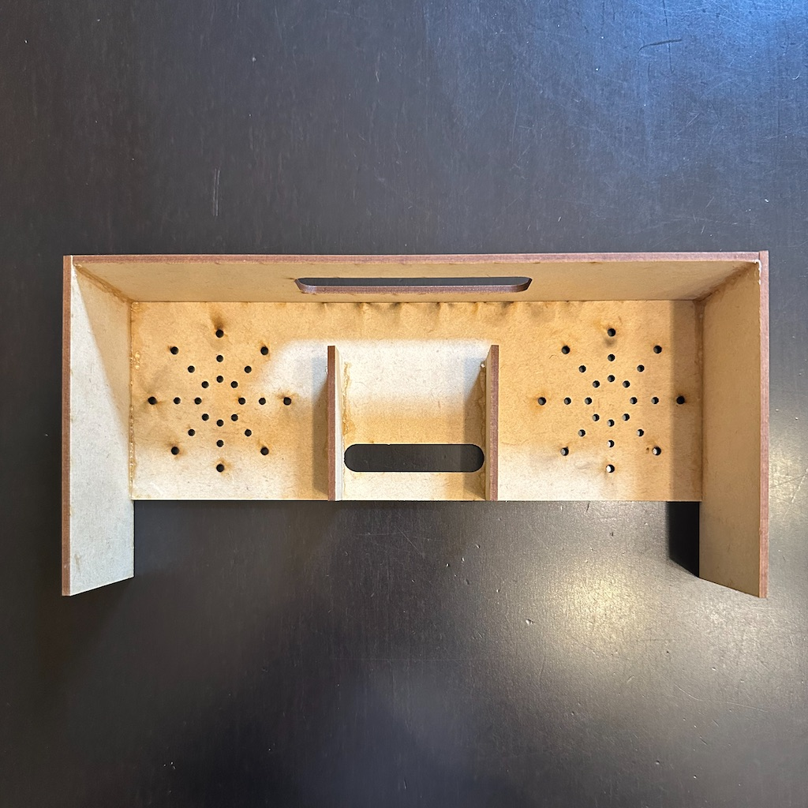

最終プロジェクト
最終プロジェクト
はじめの一歩
今回は日常生活の中で普通に使えるものを作りたいと考えていた。
そこで思いついたのがスピーカーである。
音楽は自分の生活には欠かせないものなので、スピーカーを作れば毎日使えそうだ。
とりあえず思いつきだけで作ってみる。
材料/機材
材料：2.5mm MDFボードと接着剤（自分はアロンアルファ）のみ
使用機材：レーザー加工機
構造の話
オーディオに詳しい人ならあれ？と思った人もいるかもしれない。
スピーカーを作るというのに材料にコーンやコードがないということだ。
スピーカーといえば3.5mmオーディオジャックやUSBを繋いで鳴らすものが一般的だが、
そんなたいそうなものを作る技術はない。
ここでのキーワードは音の反響である。
囲われた空間で音を鳴らすと響いて大きく聞こえる。この仕組みを利用して作っていく。
バイクがトンネルに入るとうるさく聞こえるのと同じ原理だ。
データ作り
①正面/裏面
正面と裏面は同じデータを使う。
このパーツは２つ必要。
くり抜いた部品は後で再利用する。音が出る穴の数は適当。
正面/裏面
②天面
この穴にスマホを差し込むことになる。
天面
③側面
このパーツも２つ必要。
側面

いざカット
データを元にカットしてできた部品たち
※最終的に使わなかった部品もある
組み立て
出来上がった部品を組み立てていく
こんなふうに接着して

最後に蓋をして
完成
MDF素材がおしゃれな雰囲気でいい感じ。
問題と解決
早速使ってみるが、ここで問題が発生する。
支えがないと、スマホの重みに耐えられずに後ろに倒れてしまうのだ。
ここで急遽、端材を使ってつっかえ棒を作ることにした。
最終的にこうなった。びくともしないくらい安定するようになった。
使ってみる
音質は昔のラジオみたいな雰囲気。角が取れたような音で逆にいい感じ。
このスピーカーの魅力は音質じゃない。
電源を必要としないためどこでも使えるところが魅力なのだ。
ぶっ壊れても何回でも作ることができるから外でも使える。